# First, clean the environment:
rm(list = ls())
# Now load packages:
# install.packages("groundhog")
library("groundhog")
groundhog.library(pkg = c("data.table", "MASS", "crayon",
"tmvtnorm", "here",
"parallel", "foreach", "doSNOW",
"ggplot2", "patchwork", "scico"),
date = "2025-04-15")Introduction to SAFE
A step by step online tutorial
Introduction
If you have any questions, errors or bug reports, please feel free to contact Erick Lundgren (erick.lundgren@gmail.com).
To run the code interactively (instead of just reading this lovely tutorial), do the following:
- Clone the github repo: https://github.com/ejlundgren/SAFE.git
- Run the code chunks in the SAFE simulations tutorial.qmd while in the R project session or just follow along here on the web
QUESTION: I prefer data.table() and I wrote everything in that function…I can convert to dplyr no problem though if people are that picky. Does anyone care?
Load libraries
The groundhog package ensures that the library versions you use are the same as ours. You will need R version 4.5.0. Be sure to install groundhog if it is not already installed with install.packages().
An introduction to SAFE bootstrapping
SAFE bootstrapping is an incredible, seemingly magical, technique to calculate bias-corrected point estimates and sampling variance for effect sizes. This is particularly useful for novel effect sizes for which sampling variance formulas may not be known. In some cases, it is also more unbiased than traditional plugin formulas for variance and point estimates.
How does it work?
With SAFE bootstrapping, one draws a cloud of hyperparameters of all variables used in an effect size formula. You then apply your effect size formula to this cloud. The variance of this transformed cloud is the sampling variance of your effect size!
You can then calculate a bias-transformed point estimate by taking the mean of this transformed cloud and subtracting it from 2 times the point estimate derived from the original variables.
Let’s demonstrate.
Imagine you’re conducting a meta-analysis of animal responses to something or other. Many studies are reporting data as mean ‘latency time’ (e.g., time until an animal runs). However, you want to create an effect size of ‘speed’ from latency time. This is simple: take the inverse of latency (1/latency). Here let’s start with 3 mean latency times and convert to our new ‘speed’ effect size
# The type of data summaries you might extract for a meta-analysis:
mean_latency <- c(15, 30, 21)
n <- c(25, 31, 50)
sd <- c(4.6, 3.1, 2.5)
# New effect size:
1/mean_latency[1] 0.06666667 0.03333333 0.04761905The effect size is trivial to calculate. But what is the sampling variance of this effect size, given that each of these measurements was associated with measurement sample size and standard deviation?
You could use calculus to derive a first-order sampling variance formula. Or you could use SAFE.
Step 1: Draw hyperparameters.
If the word ‘hyperparameter’ is scary, what we mean is a distribution associated with the variables in our effect size formula, in this case mean latency.
This is different than drawing from a population based on mean and standard deviation, which will have a broad distribution, reflecting the underlying population. Instead, we’re interested in drawing a distribution of the means—the hyperparameter of our effect size of interest. To do this, we draw from a normal distribution with standard error to describe dispersion.
To convert our ‘latency’ time to our ‘speed’ effect size with SAFE, let’s draw 10,000 samples of the mean latency hyperparameter from a normal distribution, with standard error as our sd. To avoid using lapply or loops, we’ll just do this on a single latency time and associated standard deviation and sample size.
Shinichi, I don’t fully understand why we square root the N for this effect size but not the others
Step 2: Transform hyperparameters to target effect size
Now, let’s transform this cloud of hyperparameters to ‘speed’ with our definition formula 1/x. These values are centered on our original effect size, which we’ll overlay in red

Step 3: Calculate sampling variance
To calculate sampling variance, we’ll simply calculate the variance of this transformed cloud.
safe_vi <- var(cloud_trans)
safe_vi[1] 1.724453e-05Voila! Sampling variance for a novel effect size.
Step 4: Calculate bias-corrected effect size
However, given low sample sizes for some measurements, and the knowledge that point estimates can be biased at low N, let’s also calculate a bias-corrected point estimate from this cloud of hyperparameters:
It’d be nice to explain the logic here better…without formulas haha
safe_yi <- (2 * plugin_effect_size) - mean(cloud_trans)
safe_yi[1] 0.06641105Let’s compare this to the original point estimate:
safe_yi[1] 0.06641105plugin_effect_size[1] 0.06666667So similar! And potentially less biased. Let’s find out. Below, we’ll use Monte Carlo simulations to compare the bias of estimates from SAFE to estimates from just plugging into a formula. But first, let’s introduce a helpful function for calculating SAFE for a variety of effect sizes.
Load encapsulated functions
We wrote a function to calculate effect sizes both with plugin estimators and with SAFE. This function can be sourced into the local environment. Let’s load the function and then calculate effect sizes, with SAFE, for several examples from the main text. The function is located in the github repo at scripts/SAFE_function.R. This function returns a data.table (basically a fast data.frame) with columns for plugin effect sizes and sampling variances (denoted with _first or _second based on derivative order) and SAFE effect sizes and sampling variances (denoted with _safe). Point estimates (effect sizes) are denoted with yi_ while sampling variances are denoted with vi_.
source("scripts/SAFE_function.R")
# For a single effect size and sampling variance:
eff_size(x1 = 14.5, x2 = 7.9,
sd1 = 1.3, sd2 = 2,
n1 = 20, n2 = 20,
effect_type = "lnRoM",
SAFE = TRUE,
verbose = TRUE,
SAFE_boots = 1e6)lnRoM cannot accept x1 or x2 ≤ 0. Leaving it to user's discretion to check prior to execution. Negative values will be returned as NA.
Using the formulas:
yi_first <- log(x1 / x2)
yi_second <- log(x1 / x2) + 0.5 * (sd1^2/(n1 * x1^2) - sd2^2/(n2 * x2^2))
vi_first <- sd1^2 / (n1 * x1^2) + sd2^2 / (n2 * x2^2)
vi_second <- sd1^2 / (n1 * x1^2) + sd2^2 / (n2 * x2^2) + 0.5 * ( (sd1^4 / (n1^2 * x1^4)) + (sd2^4 / (n2^2 * x2^4)))
Be sure that all variables in formula are correctly named.
SAFE: 1 / 1
Running SAFE with 1e+06 bootstraps yi_first yi_second vi_first vi_second yi_safe vi_safe SE_safe
<num> <num> <num> <num> <num> <num> <num>
1: 0.6072859 0.6058845 0.003606517 0.003611733 0.6058194 0.003633309 0.06027694The function also works with a vector of raw data:
eff_size(x1 = c(14.5, 13, 15.8),
x2 = c(7.9, 21, 18.4),
sd1 = c(1.3, 2, 1.9),
sd2 = c(2, 3.1, 1.4),
n1 = c(20, 20, 20),
n2 = c(20, 15, 18),
effect_type = "SMD",
SAFE = TRUE,
verbose = FALSE,
parallelize = TRUE,
SAFE_boots = 1e6) yi_first yi_second vi_first vi_second yi_safe vi_safe SE_safe
<num> <num> <num> <num> <num> <num> <num>
1: 3.912937 3.835196 0.3014615 0.2975274 3.822024 0.3654945 0.6045614
2: -3.167230 -3.094698 0.2686568 0.2633745 -3.409219 0.2531630 0.5031530
3: -1.545312 -1.512893 0.1387221 0.1343396 -1.540434 0.1405660 0.3749214For a full list of options that eff_size can calculate, run:
eff_size()
Must specify an effect size type ('effect_type') and necessary variables (named in arguments to function call) to match formula equations.
Returning effect size names & required variables for reference. name vars_required
<char> <char>
1: SMD x1, x2, sd1, sd2, n1, n2
2: SMD_paired x1, x2, sd1, sd2, r, n1, n2
3: lnCVR x1, x2, sd1, sd2, n1, n2
4: lnCVR_paired x1, x2, sd1, sd2, r, n1, n2
5: lnHWE_A n_AA, n_Aa, n_aa
6: lnM_paired x1, x2, sd1, sd2, n1, n2, r
7: lnOR a, b, c, d
8: lnRR a, c, n1, n2
9: lnRoM x1, x2, sd1, sd2, n1, n2
10: lnRoM_paired x1, x2, sd1, sd2, r, n1, n2
11: reciprocal n, x, sdHow good is SAFE?
We simulated the bias of SAFE calculations versus normal plugin calculations for a variety of common, and less common, effect sizes. We did this across a range of input variables, particularly sample size and the number of SAFE bootstraps. The creation of these scenarios differed for each effect size (based on input variables). The scenarios can be loaded as follows. Let’s look at the simulations for lnRoM:
scenarios <- readRDS("builds/scenarios.Rds")
# Subset scenarios:
guide <- scenarios[effect_type == "lnRoM" &
boots == 1e6, ]
guide[, .(effect_type, scenario_id, boots,
true_mean1, true_mean2,
true_sd1, true_sd2,
sample_size1, sample_size2)] effect_type scenario_id boots true_mean1 true_mean2 true_sd1 true_sd2
<char> <char> <num> <num> <num> <num> <num>
1: lnRoM lnRoM_scenario_6 1e+06 13.4 16.1 4.6 3.9
2: lnRoM lnRoM_scenario_13 1e+06 13.4 16.1 4.6 3.9
3: lnRoM lnRoM_scenario_20 1e+06 13.4 16.1 4.6 3.9
4: lnRoM lnRoM_scenario_27 1e+06 13.4 16.1 4.6 3.9
5: lnRoM lnRoM_scenario_34 1e+06 13.4 16.1 4.6 3.9
sample_size1 sample_size2
<num> <num>
1: 5 5
2: 10 10
3: 50 50
4: 100 100
5: 150 150To evaluate effect size performance, we conducted Monte Carlo simulations for each scenario. In these simulations, we created simulated datasets based on true values for each scenario. We then calculated effect sizes and sampling variances (both with plugin formulas and SAFE) for the ‘true’ values and based on the simulated dataset. We did this 1e5 times for each scenario.
In these Monte Carlo simulation, we were interested in bias, or the difference between the ‘true’ estimands (i.e., sampling variance and effect sizes) and the estimates (of sampling variance and effect sizes) produced from various methods and applied to the simulated data. We’ll explain the difference between estimands, estimators, and estimates below.
To illustrate, we’ll do a dummy simulation for lnRoM. Note that the means/sd for each scenario are the same. The only variables that differ are sample sizes. To make this tractable, we’ll only run 100 simulations.
To speed things up we will do this in parallel. The function prepare_cluster() below can help set things up, including a progress bar so you don’t lose your mind wondering what’s going on in there.
set.seed(2025)
# Prepare cluster:
prepare_cluster <- function(n){
require("parallel")
require("foreach")
require("doSNOW")
nCores <- parallel::detectCores() -1
cl <- makeCluster(nCores)
registerDoSNOW(cl)
# Progress bar
pb <- txtProgressBar(max = n, style = 3)
progress <- function(n) setTxtProgressBar(pb, n)
opts <- list(progress = progress)
ret <- list(opts, pb, cl)
names(ret) <- c("options", "progress", "cluster")
return(ret)
cat("Pass 'x$options' to .opts in foreach;
'x$progress' to setTxtProgressBar(x$progress, i);
'x$cluster' to stopCluster(x$cluster) after foreach")
}Now we will run 100 simulations to showcase how this method works. The actual simulations had a length of 1e5 and are loaded and visualized below. The first part of this code (inside the lapply) creates simulated data based on ‘true’ means and standard deviations. This data is then summarized to a simulation mean and standard deviation. We will then calculate effect sizes and sampling variances for the ‘true’ values and simulated values. Note that even with only 100 iterations, this can take a minute, so feel free to load the already run dummy dataset in the next code block.
rerun <- F
if(rerun){
monte_carlo_N <- 100
clust_out <- prepare_cluster(n = monte_carlo_N)
res <- foreach(i = 1:monte_carlo_N,
.options.snow = clust_out$options,
.errorhandling = "pass",
.packages = c("data.table", "MASS", "tmvtnorm")) %dopar% {
# Calculate 'true' values from scenario:
true_point <- eff_size(x1 = guide$true_mean1, x2 = guide$true_mean2,
sd1 = guide$true_sd1, sd2 = guide$true_sd2,
n1 = guide$sample_size1, n2 = guide$sample_size2,
effect_type = "lnRoM",
SAFE = FALSE,
verbose = FALSE,
SAFE_boots = 1e6)
setnames(true_point,
c("yi_first", "vi_first",
"yi_second", "vi_second"),
c("true_y_plugin_1st", "true_v_plugin_1st",
"true_y_plugin_2nd", "true_v_plugin_2nd"))
# Simulate data for each scenario in an lapply:
sim_dat <- lapply(1:nrow(guide), function(x){
# Simulate data for guide
sig <- diag(c(guide$true_sd1[x]^2,
guide$true_sd2[x]^2))
means <- c(m1 = guide$true_mean1[x],
m2 = guide$true_mean2[x])
y <- rtmvnorm(n = max(c(guide$sample_size1[x], guide$sample_size2[x])),
mean = means,
sigma = sig,
lower = rep(0, length(means)),
upper = rep(Inf, length(means)),
algorithm = "gibbs") |>
as.data.frame() |>
setDT()
names(y) <- c("m1", "m2")
# Filter to number of samples per treatment
sim_dat <- list(x1 = y[1:guide$sample_size1[x], ]$m1,
x2 = y[1:guide$sample_size2[x], ]$m2)
sim_dat <- data.table(sim_mean1 = mean(sim_dat$x1),
sim_mean2 = mean(sim_dat$x2),
sim_sd1 = sd(sim_dat$x1),
sim_sd2 = sd(sim_dat$x2),
sim_sample_size1 = length(sim_dat$x1),
sim_sample_size2 = length(sim_dat$x2))
return(sim_dat)
}) |> rbindlist()
out <- eff_size(x1 = sim_dat$sim_mean1, x2 = sim_dat$sim_mean2,
sd1 = sim_dat$sim_sd1, sd2 = sim_dat$sim_sd2,
n1 = guide$sample_size1, n2 = guide$sample_size2,
effect_type = "lnRoM",
SAFE = TRUE,
verbose = FALSE,
parallelize = FALSE,
SAFE_boots = 1e6)
setnames(out,
c("yi_first", "vi_first",
"yi_second", "vi_second"),
c("sim_y_plugin_1st", "sim_v_plugin_1st",
"sim_y_plugin_2nd", "sim_v_plugin_2nd"))
# Store results:
results <- data.table(guide,
sim_dat,
true_point,
out)
setTxtProgressBar(clust_out$progress, i)
return(results)
}
stopCluster(clust_out$cluster)
res <- rbindlist(res)
head(res)
}Or just load the full simulation (1e5) here:
scenario_id boots effect_type true_mean1 true_mean2 true_sd1 true_sd2
<char> <num> <char> <num> <num> <num> <num>
1: lnRoM_scenario_4 1e+06 lnRoM 13.4 16.1 4.6 3.9
2: lnRoM_scenario_4 1e+06 lnRoM 13.4 16.1 4.6 3.9
3: lnRoM_scenario_4 1e+06 lnRoM 13.4 16.1 4.6 3.9
sample_size1 sample_size_ratio sample_size2 sim_mean1 sim_mean2 sim_sd1
<num> <num> <num> <num> <num> <num>
1: 5 1 5 13.12934 16.59769 4.986235
2: 5 1 5 12.73781 14.25180 4.363871
3: 5 1 5 14.81564 14.87446 1.991222
sim_sd2 sim_sample_size1 sim_sample_size2 true_y_plugin_1st
<num> <int> <int> <num>
1: 4.004230 5 5 -0.1835646
2: 3.704075 5 5 -0.1835646
3: 3.157322 5 5 -0.1835646
true_y_plugin_2nd true_v_plugin_1st true_v_plugin_2nd sim_y_plugin_1st
<num> <num> <num> <num>
1: -0.177648 0.03530438 0.03565099 -0.234413837
2: -0.177648 0.03530438 0.03565099 -0.112308908
3: -0.177648 0.03530438 0.03565099 -0.003962011
sim_y_plugin_2nd sim_v_plugin_1st sim_v_plugin_2nd yi_safe vi_safe
<num> <num> <num> <num> <num>
1: -0.225810970 0.04048679 0.04097060 -0.225408279 0.04328101
2: -0.107326891 0.03698369 0.03735046 -0.106866241 0.03915580
3: -0.006661305 0.01262393 0.01267106 -0.006623332 0.01285204
SE_safe iter
<num> <int>
1: 0.2080409 1
2: 0.1978783 2
3: 0.1133668 3Calculate bias
To interpret the simulation results, it is essential to understand the difference between estimands, estimators, and estimates.
Estimands are the ‘true’ value.
Estimators are the methods used to estimate the estimand. What a tongue twister! In our case, the estimators are the 1st order effect size (e.g., definition formula), the 2nd order effect size that has been adjusted (usually using the delta method, except for Hedges’ g) to reduce bias, and the SAFE method.
Estimates are the estimates of the estimands produced by the estimators 🤠
Effect size (point estimate) bias
In the case of our effect sizes, there are two estimands that we’re interested in estimating: the ‘true’ effect size (based on the definition formula of the effect size type) and sampling variance. To calculate the bias of our various estimators in estimating effect sizes, we calculate the mean of the estimates from each simulated dataset and subtract the estimand value (the true effect size off the ‘true’ values).
Here we will calculate bias in our estimates of effect sizes:
bias <- function(estimates, estimand){
return(mean(estimates) - unique(estimand))
}
point.bias <- res[, .(plugin_1st = bias(sim_y_plugin_1st, true_y_plugin_1st),
plugin_2nd = bias(sim_y_plugin_2nd, true_y_plugin_1st),
safe = bias(yi_safe, true_y_plugin_1st)),
by = .(scenario_id, sample_size1, sample_size2)] |> unique()
head(point.bias) scenario_id sample_size1 sample_size2 plugin_1st plugin_2nd
<char> <num> <num> <num> <num>
1: lnRoM_scenario_4 5 5 -0.003738263 0.002470844
2: lnRoM_scenario_10 10 10 -0.000385537 0.002574180
3: lnRoM_scenario_16 50 50 0.001587492 0.002159629
4: lnRoM_scenario_22 100 100 0.001640940 0.001925938
5: lnRoM_scenario_28 150 150 0.001657941 0.001847710
safe
<num>
1: 0.003160768
2: 0.002682675
3: 0.002163063
4: 0.001926593
5: 0.001848109# Melt this to make it plottable:
point.bias.long <- melt(point.bias,
id.vars = c("scenario_id", "sample_size1", "sample_size2"),
value.name = "bias",
variable.name = "estimator")
head(point.bias.long) scenario_id sample_size1 sample_size2 estimator bias
<char> <num> <num> <fctr> <num>
1: lnRoM_scenario_4 5 5 plugin_1st -0.003738263
2: lnRoM_scenario_10 10 10 plugin_1st -0.000385537
3: lnRoM_scenario_16 50 50 plugin_1st 0.001587492
4: lnRoM_scenario_22 100 100 plugin_1st 0.001640940
5: lnRoM_scenario_28 150 150 plugin_1st 0.001657941
6: lnRoM_scenario_4 5 5 plugin_2nd 0.002470844# Sort by sample size
setorder(point.bias.long, sample_size1)
ggplot(data = point.bias.long[sample_size1 == sample_size2, ],
aes(x = sample_size1, y = bias, color = estimator))+
geom_hline(yintercept = 0)+
geom_path(linewidth = 1)+
xlab("Sample size")+
ylab("Bias")+
coord_cartesian(ylim = c(-0.01, 0.01))+
scale_color_manual("Estimator",
labels = c("plugin_1st" = "1st order plugin\n(definition formula)",
"plugin_2nd" = "2nd order plugin\n(bias-corrected formula)",
"safe" = "SAFE bootstrapping"),
values = c("plugin_1st" = "#A8DADC",
"plugin_2nd" = "#1D3557",
"safe" = "#E63946"))+
theme_bw()+
theme(panel.border = element_blank(),
panel.grid = element_blank(),
legend.position = "bottom")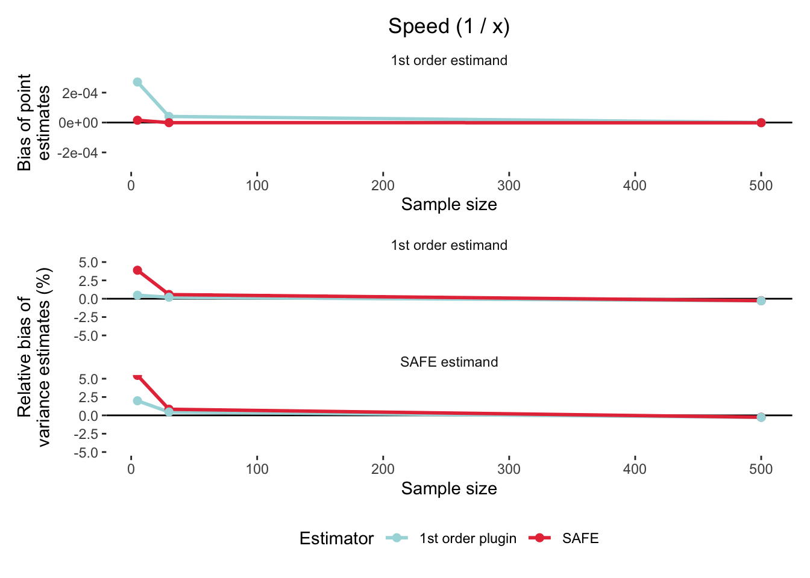
This indicates that the least biased estimator is the first order definition formula (light blue). SAFE (red) and the 2nd order plugin (navy blue) perform similarly. These bias values are incredibly small, indicating that all options are fair, except for at low sample sizes, when the first-order definition formula is quite biased.
Sampling variance bias
Interestingly, there is no way to know the ‘true’ estimand for sampling variance. WHICH I DON’T FULLY UNDERSTAND. To calculate bias for our sampling variance estimates, we actually calculate the variance in point estimates for each estimator and use each of these as the estimand. With 3 estimators, and thus 3 estimands, we’ll thus end up with 9 calculations of bias.
Since we’re interested in relative bias (Not entirely sure why), we’ll calculate bias as above but divide by the estimand and multiply by 100.
# First, calculate variance in point estimates as our 'estimand'
res[, var_estimand_1st := var(sim_y_plugin_1st),
by = .(scenario_id)]
res[, var_estimand_2nd := var(sim_y_plugin_2nd),
by = .(scenario_id)]
res[, var_estimand_SAFE := var(yi_safe),
by = .(scenario_id)]
# To make this easier to read, we'll encapsulate the relative bias in a function:
relative_bias <- function(estimates,
estimand){
return(((mean(estimates) - unique(estimand)) / estimand) * 100)
}
# Now summarize and calculate relative bias per scenario ID
var.bias <- res[, .(SAFE_estimate.1st_estimand = relative_bias(vi_safe, var_estimand_1st),
SAFE_estimate.2nd_estimand = relative_bias(vi_safe, var_estimand_2nd),
SAFE_estimate.SAFE_estimand = relative_bias(vi_safe, var_estimand_SAFE),
plugin_1st_estimate.1st_estimand = relative_bias(sim_v_plugin_1st, var_estimand_1st),
plugin_1st_estimate.2nd_estimand = relative_bias(sim_v_plugin_1st, var_estimand_2nd),
plugin_1st_estimate.SAFE_estimand = relative_bias(sim_v_plugin_1st, var_estimand_SAFE),
plugin_2nd_estimate.1st_estimand = relative_bias(sim_v_plugin_2nd, var_estimand_1st),
plugin_2nd_estimate.2nd_estimand = relative_bias(sim_v_plugin_2nd, var_estimand_2nd),
plugin_2nd_estimate.SAFE_estimand = relative_bias(sim_v_plugin_2nd, var_estimand_SAFE)),
by = .(scenario_id, sample_size1, sample_size2)] |> unique()
# Now melt:
var.bias.long <- melt(var.bias,
id.vars = c("scenario_id", "sample_size1", "sample_size2"))
head(var.bias.long) scenario_id sample_size1 sample_size2 variable
<char> <num> <num> <fctr>
1: lnRoM_scenario_4 5 5 SAFE_estimate.1st_estimand
2: lnRoM_scenario_10 10 10 SAFE_estimate.1st_estimand
3: lnRoM_scenario_16 50 50 SAFE_estimate.1st_estimand
4: lnRoM_scenario_22 100 100 SAFE_estimate.1st_estimand
5: lnRoM_scenario_28 150 150 SAFE_estimate.1st_estimand
6: lnRoM_scenario_4 5 5 SAFE_estimate.2nd_estimand
value
<num>
1: 12.2824838
2: 3.5304146
3: 0.1791294
4: 0.5912706
5: 0.3287710
6: 16.6524224# Split the 'variable' into estimator and estimand for plotting
var.bias.long[, c("Estimator", "Estimand") := tstrsplit(variable, ".", fixed = TRUE)]
# Sort the dataset by sample size
setorder(var.bias.long, sample_size1)
# Plot
ggplot(data = var.bias.long[sample_size1 == sample_size2, ],
aes(x = sample_size1, y = value, color = Estimator))+
geom_path(linewidth = 1)+
geom_hline(yintercept = 0)+
xlab("Sample size")+
ylab("Relative bias (%)")+
scale_color_manual("Estimator",
labels = c("plugin_1st_estimate" = "1st order plugin\n(definition formula)",
"plugin_2nd_estimate" = "2nd order plugin\n(bias-corrected formula)",
"SAFE_estimate" = "SAFE bootstrapping"),
values = c("plugin_1st_estimate" = "#A8DADC",
"plugin_2nd_estimate" = "#1D3557",
"SAFE_estimate" = "#E63946"))+
facet_wrap(~Estimand,
ncol = 1,
labeller = as_labeller(c("1st_estimand" = "1st order plugin estimand\n(definition formula)",
"2nd_estimand" = "2nd order plugin estimand",
"SAFE_estimand" = "SAFE estimand")))+
theme_bw()+
theme(panel.border = element_blank(),
panel.grid = element_blank(),
strip.background = element_blank(),
legend.position = "bottom")
We see here that SAFE (red) is slightly more biased, but in a conservative direction, than the other estimators.
Plot all simulations results
Now let’s look at the rest of the simulation results.
sim_results <- readRDS("builds/all_scenarios_summarized.Rds")
sim_results <- sim_results[boots == 1e5, ]These are plotting 1e5 right now…Rerunning 1e6. Will update soon
Speed
This was our dummy effect size in the beginning. How do the point and variance estimates calculated by SAFE compare to just calculating 1 / x for point estimates?
We compared the variance estimates from SAFE to variance estimates produced by a 1st-order derivative sampling variance formula derived with the delta method (denoted as 1st order plugin here). Let’s see which did better!
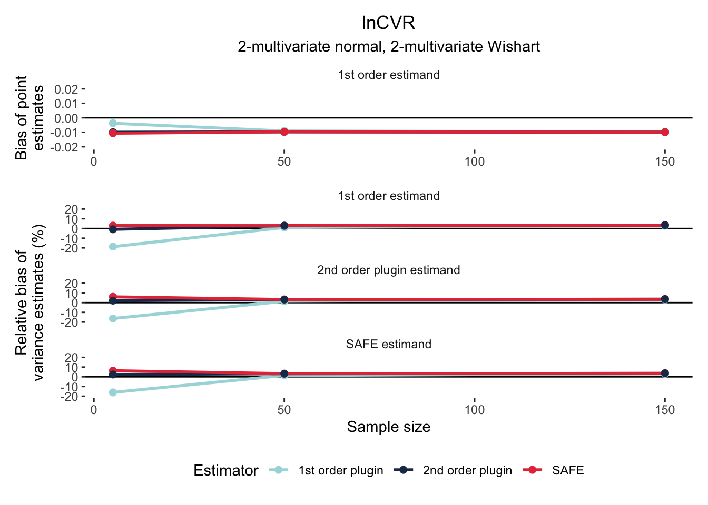
SMD 4-multivariate normal
The SAFE estimator for this effect size was calculated with 4 multivariate normal distributions for both mean and SD, as both of these parameters are in the definition formula (Cohen’s d) of SMD. Let’s compare the bias of SAFE, Cohen’s d, and Hedges’ g.
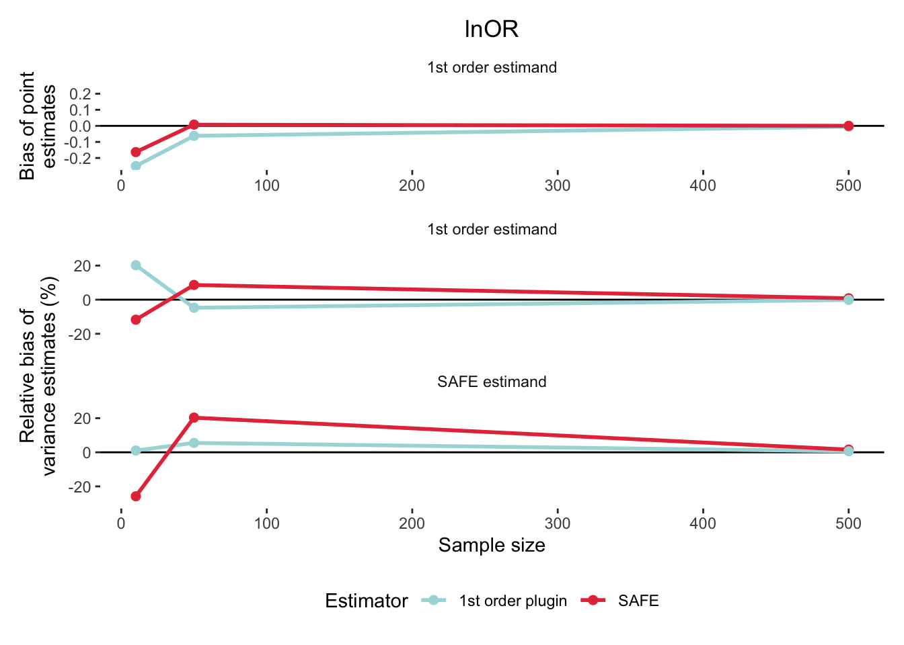
SMD 2-multivariate normal and 2-Wishart
With this estimator, the SAFE calculation used the normal distribution to simulate the two means but the Wishart distribution to estimate the SD.
This is finishing up on the cluster
lnCVR 4-multivariate normal
The SAFE estimator for this effect size was calculated with 4 multivariate normal distributions for both mean and SD.
Finishing up on cluster
lnCVR 2-multivariate normal and 2-Wishart
The SAFE estimator for this effect size was calculated with 2-multivariate normal distribution for the means and 2-Wishart distributions for the SD.
This is finishing up on the cluster
lnOR
In this effect size estimation, the SAFE calculation used a binomial distribution to draw random binomial samples for ‘a’ and ‘c’.
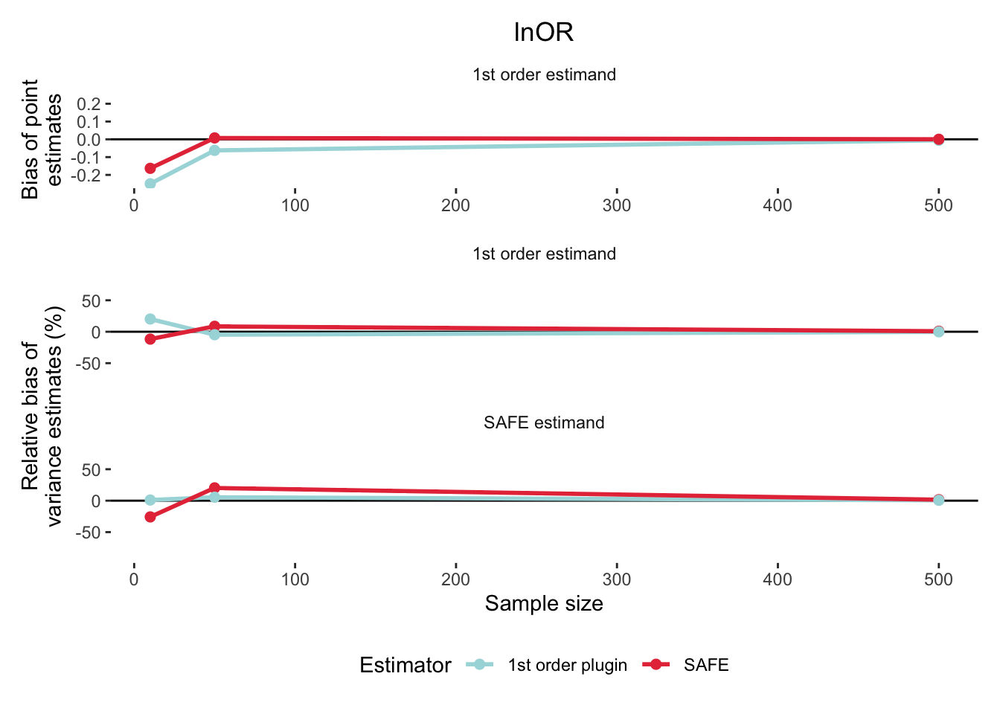
lnRR
In this effect size estimation, the SAFE calculation drew ‘a’ and ‘c’ from a binomial distribution.
Hardy Weinberg Disequilibrium
In this effect size estimation, the SAFE calculation drew ‘n_AA’, ‘n_Aa’, and ‘n_aa’ from a binomial distribution.
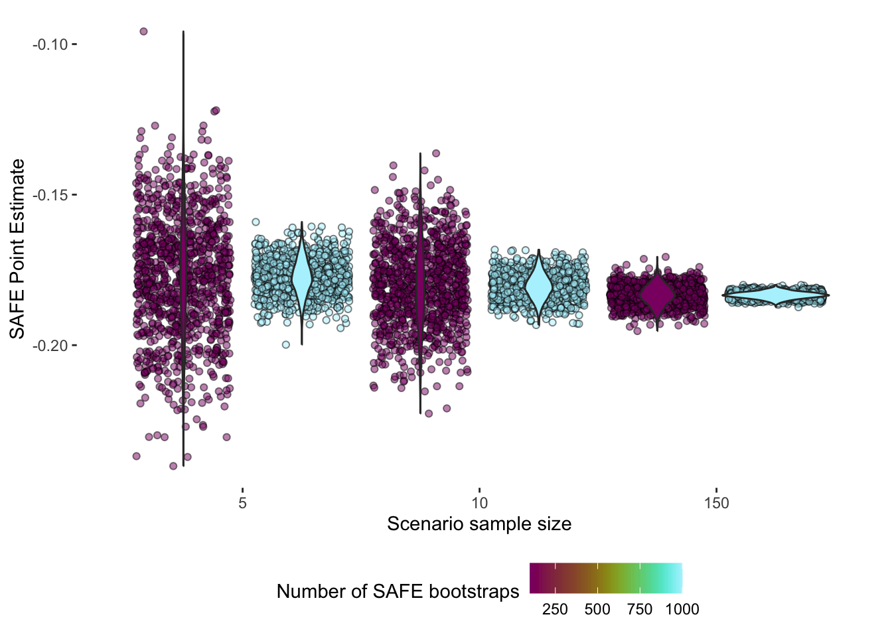
How many SAFE bootstraps?
The SAFE method relies on bootstrapping to calculate effect size point estimates and sampling variance. It’s sort of magical how well it works! But, how many bootstraps are necessary? Let’s find out by doing another Monte Carlo simulation, again of lnRoM. This time, instead of calculating bias, we’ll look at the standard deviation of the point and sampling variance estimates as we change the number of bootstraps.
Let’s choose two bootstrap lengths: 100 and 1,000. We’ll run a simulation 1,000 times just to make this easy. (See below for full 1e5 simulation results)
# Create some scenarios based on combinations of sample size and boot-length
scenario <- CJ(true_mean1 = 13.4, true_sd1 = 4.6,
true_mean2 = 16.1, true_sd2 = 3.9,
sample_size1 = c(5, 10, 150))
scenario[, sample_size2 := sample_size1]
scenarioKey: <true_mean1, true_sd1, true_mean2, true_sd2, sample_size1>
true_mean1 true_sd1 true_mean2 true_sd2 sample_size1 sample_size2
<num> <num> <num> <num> <num> <num>
1: 13.4 4.6 16.1 3.9 5 5
2: 13.4 4.6 16.1 3.9 10 10
3: 13.4 4.6 16.1 3.9 150 150Now let’s run this in a foreach loop. If you’d rather not run this on your machine, if run == FALSE, the code will just load the already finished simulation. Note that in this simulation, we’re evaluating SAFE estimates using only the ‘true’ values. In the full 1e5 simulations below, we’ll evalaute SAFE on simulated data.
@Shinichi, @Alistair, @Daniel: Is that ok? This simulation right here is only for illustration purposes. I can simulate data for it though if you all think I should. Since we’re not interested in bias from ‘true’ it seems like it doesn’t matter?
out <- list()
sub_scenario <- c()
N <- 1000
res <- list()
clust_out <- prepare_cluster(n = N)
res <- foreach(i = 1:N,
.options.snow = clust_out$options,
.errorhandling = "stop",
.packages = c("data.table", "MASS",
"crayon", "tmvtnorm")) %dopar% {
# Now calculate SAFE with 100 bootstraps
out[[1]] <- eff_size(x1 = scenario$true_mean1,
x2 = scenario$true_mean2,
sd1 = scenario$true_sd1,
sd2 = scenario$true_sd2,
n1 = scenario$sample_size1,
n2 = scenario$sample_size2,
effect_type = "lnRoM",
SAFE = TRUE,
verbose = FALSE,
parallelize = FALSE,
SAFE_boots = 100)
out[[1]] <- data.table(out[[1]],
sample_size = scenario$sample_size1,
boots = 100)
out[[1]]
# Now with 1000 bootstraps
out[[2]] <- eff_size(x1 = scenario$true_mean1,
x2 = scenario$true_mean2,
sd1 = scenario$true_sd1,
sd2 = scenario$true_sd2,
n1 = scenario$sample_size1,
n2 = scenario$sample_size2,
effect_type = "lnRoM",
SAFE = TRUE,
verbose = FALSE,
parallelize = FALSE,
SAFE_boots = 1000)
out[[2]] <- data.table(out[[2]],
sample_size = scenario$sample_size1,
boots = 1000)
out[[2]]
return(rbindlist(out))
}
res.dt <- rbindlist(res)
saveRDS(res.dt, "builds/dummy_bootstrap_simulation.Rds")Let’s look at the dispersion of the SAFE estimates as a function of sample size and bootstrap length.
head(res.dt) yi_first yi_second vi_first vi_second yi_safe vi_safe
<num> <num> <num> <num> <num> <num>
1: -0.1835646 -0.1776480 0.035304382 0.035650987 -0.1579197 0.031398179
2: -0.1835646 -0.1806063 0.017652191 0.017738842 -0.1595399 0.018264361
3: -0.1835646 -0.1833673 0.001176813 0.001177198 -0.1820780 0.001043185
4: -0.1835646 -0.1776480 0.035304382 0.035650987 -0.1750656 0.035870018
5: -0.1835646 -0.1806063 0.017652191 0.017738842 -0.1879756 0.018363796
6: -0.1835646 -0.1833673 0.001176813 0.001177198 -0.1834726 0.001069018
SE_safe sample_size boots
<num> <num> <num>
1: 0.17719531 5 100
2: 0.13514570 10 100
3: 0.03229838 150 100
4: 0.18939382 5 1000
5: 0.13551308 10 1000
6: 0.03269584 150 1000# First, the point estimates:
ggplot(data = res.dt,
aes(x = as.factor(sample_size), y = yi_safe,
fill = boots,
group = interaction(sample_size, boots)))+
geom_jitter(alpha = .5, shape = 21,
position = position_jitterdodge(dodge.width = 1))+
geom_violin(position = position_dodge(width = 1))+
ylab("SAFE Point Estimate")+
xlab("Scenario sample size")+
scale_fill_scico("Number of SAFE bootstraps",
palette = "hawaii")+
theme_bw()+
theme(panel.border = element_blank(),
panel.grid = element_blank(),
strip.background = element_blank(),
legend.position = "bottom")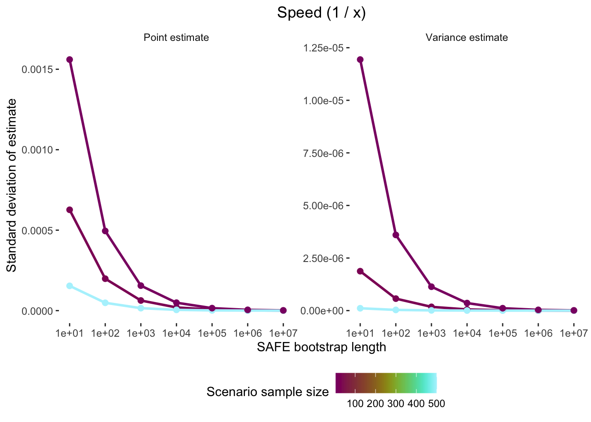
Now let’s look at the variance estimates:
ggplot(data = res.dt,
aes(x = as.factor(sample_size), y = vi_safe,
fill = boots,
group = interaction(sample_size, boots)))+
geom_jitter(alpha = .5, shape = 21,
position = position_jitterdodge(dodge.width = 1))+
geom_violin(position = position_dodge(width = 1))+
ylab("SAFE Variance Estimate")+
xlab("Scenario sample size")+
scale_fill_scico("Number of SAFE bootstraps",
palette = "hawaii")+
theme_bw()+
theme(panel.border = element_blank(),
panel.grid = element_blank(),
strip.background = element_blank(),
legend.position = "bottom")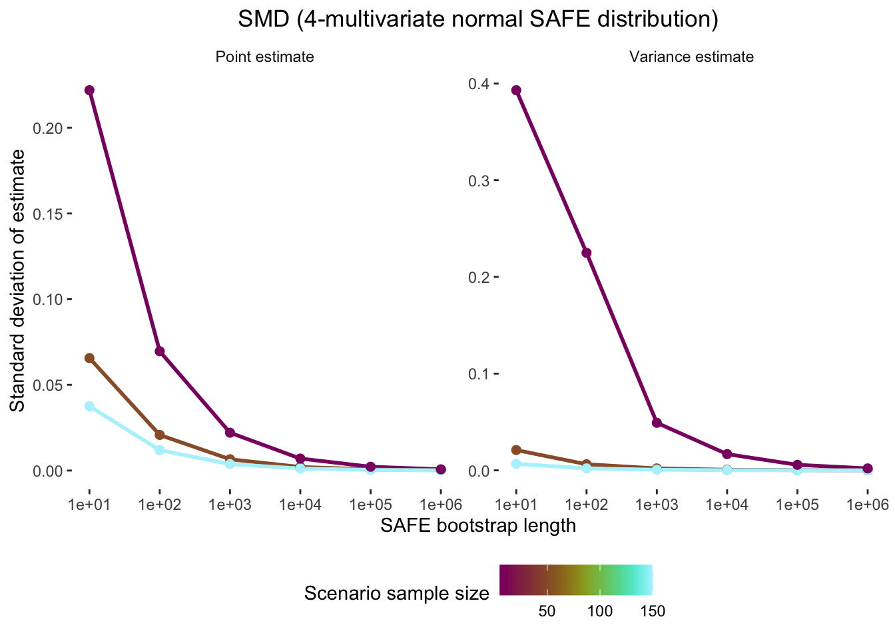
Looks like the dispersion in estimates is shaped by number of SAFE bootstraps and improves considerably with 1,000 bootstraps, especially at low sample sizes. Another way to visualize this (which we’ll use below in the proper 1e5 simulations) is to plot the standard deviation.
res.summary <- res.dt[, .(sd_point_estimate = sd(yi_safe),
sd_variance_estimate = sd(vi_safe)),
by = .(sample_size, boots)]
res.summary sample_size boots sd_point_estimate sd_variance_estimate
<num> <num> <num> <num>
1: 5 100 0.018929026 5.556060e-03
2: 10 100 0.013416798 2.679025e-03
3: 150 100 0.003435948 1.672556e-04
4: 5 1000 0.006038086 1.738017e-03
5: 10 1000 0.004235430 8.270438e-04
6: 150 1000 0.001127076 5.244775e-05# Let's melt this to make a single plot:
res.summary.mlt <- melt(res.summary,
id.vars = c("sample_size", "boots"))
res.summary.mlt sample_size boots variable value
<num> <num> <fctr> <num>
1: 5 100 sd_point_estimate 1.892903e-02
2: 10 100 sd_point_estimate 1.341680e-02
3: 150 100 sd_point_estimate 3.435948e-03
4: 5 1000 sd_point_estimate 6.038086e-03
5: 10 1000 sd_point_estimate 4.235430e-03
6: 150 1000 sd_point_estimate 1.127076e-03
7: 5 100 sd_variance_estimate 5.556060e-03
8: 10 100 sd_variance_estimate 2.679025e-03
9: 150 100 sd_variance_estimate 1.672556e-04
10: 5 1000 sd_variance_estimate 1.738017e-03
11: 10 1000 sd_variance_estimate 8.270438e-04
12: 150 1000 sd_variance_estimate 5.244775e-05setorder(res.summary.mlt, boots)
ggplot(data = res.summary.mlt,
aes(x = boots, y = value, color = sample_size,
group = interaction(sample_size)))+
geom_path()+
geom_point(size = pt_size)+
facet_wrap(~variable,
labeller = as_labeller(c("sd_point_estimate" = "Point estimate",
"sd_variance_estimate" = "Variance estimate")))+
scale_color_scico("Scenario sample size",
palette = "hawaii")+
xlab("SAFE bootstrap length")+
ylab("Standard deviation of estimate")+
theme_bw()+
theme(panel.border = element_blank(),
panel.grid = element_blank(),
strip.background = element_blank(),
legend.position = "bottom")Bootstrap scenario results
Now let’s look at the full Monte Carlo simulation results for the influence of bootstrap length.
THESE ARE INCORRECT AND ARE BEING UPDATED RIGHT NOW…
sim_results <- readRDS("builds/all_scenarios_summarized.Rds")
sim_results <- sim_results[calculation == "SD", ]
head(sim_results) scenario_id true_mean true_sd sample_size boots effect_type
<char> <num> <num> <num> <num> <char>
1: SMD_Wishart_scenario_1 NA NA NA 10 SMD_Wishart
2: SMD_Wishart_scenario_1 NA NA NA 10 SMD_Wishart
3: SMD_Wishart_scenario_15 NA NA NA 10 SMD_Wishart
4: SMD_Wishart_scenario_15 NA NA NA 10 SMD_Wishart
5: SMD_Wishart_scenario_17 NA NA NA 1000 SMD_Wishart
6: SMD_Wishart_scenario_17 NA NA NA 1000 SMD_Wishart
true_mean1 true_mean2 true_sd1 true_sd2 sample_size1 sample_size_ratio
<num> <num> <num> <num> <num> <num>
1: 13.4 16.1 4.6 3.9 5 1
2: 13.4 16.1 4.6 3.9 5 1
3: 13.4 16.1 4.6 3.9 50 1
4: 13.4 16.1 4.6 3.9 50 1
5: 13.4 16.1 4.6 3.9 50 1
6: 13.4 16.1 4.6 3.9 50 1
sample_size2 true_p_a true_p_c n1 n_ratio n2 true_a true_c true_b
<num> <num> <num> <num> <num> <num> <num> <num> <num>
1: 5 NA NA NA NA NA NA NA NA
2: 5 NA NA NA NA NA NA NA NA
3: 50 NA NA NA NA NA NA NA NA
4: 50 NA NA NA NA NA NA NA NA
5: 50 NA NA NA NA NA NA NA NA
6: 50 NA NA NA NA NA NA NA NA
true_d p_AA p_Aa p_aa n true_n_AA true_n_Aa true_n_aa calculation
<num> <num> <num> <num> <num> <num> <num> <num> <char>
1: NA NA NA NA NA NA NA NA SD
2: NA NA NA NA NA NA NA NA SD
3: NA NA NA NA NA NA NA NA SD
4: NA NA NA NA NA NA NA NA SD
5: NA NA NA NA NA NA NA NA SD
6: NA NA NA NA NA NA NA NA SD
estimator estimand estimate_of value
<char> <char> <char> <num>
1: safe NA point 0.241970201
2: safe NA variance 0.371618692
3: safe NA point 0.065869647
4: safe NA variance 0.020699924
5: safe NA point 0.006575180
6: safe NA variance 0.001968203Speed
Once again, here’s our novel effect size ‘speed’, 1 / x. How do our SAFE estimates of speed and its sampling variance change as we change the number of bootstraps?
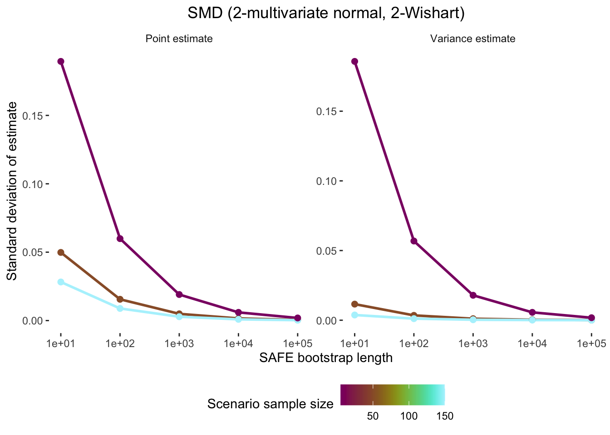
SMD 4-multivariate normal
scenario_id true_mean true_sd sample_size boots effect_type
<char> <num> <num> <num> <num> <char>
1: SMD_normal_scenario_1 NA NA NA 1e+01 SMD_normal
2: SMD_normal_scenario_1 NA NA NA 1e+01 SMD_normal
3: SMD_normal_scenario_15 NA NA NA 1e+01 SMD_normal
4: SMD_normal_scenario_15 NA NA NA 1e+01 SMD_normal
5: SMD_normal_scenario_29 NA NA NA 1e+01 SMD_normal
6: SMD_normal_scenario_29 NA NA NA 1e+01 SMD_normal
7: SMD_normal_scenario_17 NA NA NA 1e+03 SMD_normal
8: SMD_normal_scenario_17 NA NA NA 1e+03 SMD_normal
9: SMD_normal_scenario_3 NA NA NA 1e+03 SMD_normal
10: SMD_normal_scenario_3 NA NA NA 1e+03 SMD_normal
11: SMD_normal_scenario_31 NA NA NA 1e+03 SMD_normal
12: SMD_normal_scenario_31 NA NA NA 1e+03 SMD_normal
13: SMD_normal_scenario_18 NA NA NA 1e+04 SMD_normal
14: SMD_normal_scenario_18 NA NA NA 1e+04 SMD_normal
15: SMD_normal_scenario_32 NA NA NA 1e+04 SMD_normal
16: SMD_normal_scenario_32 NA NA NA 1e+04 SMD_normal
17: SMD_normal_scenario_4 NA NA NA 1e+04 SMD_normal
18: SMD_normal_scenario_4 NA NA NA 1e+04 SMD_normal
19: SMD_normal_scenario_19 NA NA NA 1e+05 SMD_normal
20: SMD_normal_scenario_19 NA NA NA 1e+05 SMD_normal
21: SMD_normal_scenario_33 NA NA NA 1e+05 SMD_normal
22: SMD_normal_scenario_33 NA NA NA 1e+05 SMD_normal
23: SMD_normal_scenario_5 NA NA NA 1e+05 SMD_normal
24: SMD_normal_scenario_5 NA NA NA 1e+05 SMD_normal
scenario_id true_mean true_sd sample_size boots effect_type
true_mean1 true_mean2 true_sd1 true_sd2 sample_size1 sample_size_ratio
<num> <num> <num> <num> <num> <num>
1: 13.4 16.1 4.6 3.9 5 1
2: 13.4 16.1 4.6 3.9 5 1
3: 13.4 16.1 4.6 3.9 50 1
4: 13.4 16.1 4.6 3.9 50 1
5: 13.4 16.1 4.6 3.9 150 1
6: 13.4 16.1 4.6 3.9 150 1
7: 13.4 16.1 4.6 3.9 50 1
8: 13.4 16.1 4.6 3.9 50 1
9: 13.4 16.1 4.6 3.9 5 1
10: 13.4 16.1 4.6 3.9 5 1
11: 13.4 16.1 4.6 3.9 150 1
12: 13.4 16.1 4.6 3.9 150 1
13: 13.4 16.1 4.6 3.9 50 1
14: 13.4 16.1 4.6 3.9 50 1
15: 13.4 16.1 4.6 3.9 150 1
16: 13.4 16.1 4.6 3.9 150 1
17: 13.4 16.1 4.6 3.9 5 1
18: 13.4 16.1 4.6 3.9 5 1
19: 13.4 16.1 4.6 3.9 50 1
20: 13.4 16.1 4.6 3.9 50 1
21: 13.4 16.1 4.6 3.9 150 1
22: 13.4 16.1 4.6 3.9 150 1
23: 13.4 16.1 4.6 3.9 5 1
24: 13.4 16.1 4.6 3.9 5 1
true_mean1 true_mean2 true_sd1 true_sd2 sample_size1 sample_size_ratio
sample_size2 true_p_a true_p_c n1 n_ratio n2 true_a true_c true_b
<num> <num> <num> <num> <num> <num> <num> <num> <num>
1: 5 NA NA NA NA NA NA NA NA
2: 5 NA NA NA NA NA NA NA NA
3: 50 NA NA NA NA NA NA NA NA
4: 50 NA NA NA NA NA NA NA NA
5: 150 NA NA NA NA NA NA NA NA
6: 150 NA NA NA NA NA NA NA NA
7: 50 NA NA NA NA NA NA NA NA
8: 50 NA NA NA NA NA NA NA NA
9: 5 NA NA NA NA NA NA NA NA
10: 5 NA NA NA NA NA NA NA NA
11: 150 NA NA NA NA NA NA NA NA
12: 150 NA NA NA NA NA NA NA NA
13: 50 NA NA NA NA NA NA NA NA
14: 50 NA NA NA NA NA NA NA NA
15: 150 NA NA NA NA NA NA NA NA
16: 150 NA NA NA NA NA NA NA NA
17: 5 NA NA NA NA NA NA NA NA
18: 5 NA NA NA NA NA NA NA NA
19: 50 NA NA NA NA NA NA NA NA
20: 50 NA NA NA NA NA NA NA NA
21: 150 NA NA NA NA NA NA NA NA
22: 150 NA NA NA NA NA NA NA NA
23: 5 NA NA NA NA NA NA NA NA
24: 5 NA NA NA NA NA NA NA NA
sample_size2 true_p_a true_p_c n1 n_ratio n2 true_a true_c true_b
true_d p_AA p_Aa p_aa n true_n_AA true_n_Aa true_n_aa calculation
<num> <num> <num> <num> <num> <num> <num> <num> <char>
1: NA NA NA NA NA NA NA NA SD
2: NA NA NA NA NA NA NA NA SD
3: NA NA NA NA NA NA NA NA SD
4: NA NA NA NA NA NA NA NA SD
5: NA NA NA NA NA NA NA NA SD
6: NA NA NA NA NA NA NA NA SD
7: NA NA NA NA NA NA NA NA SD
8: NA NA NA NA NA NA NA NA SD
9: NA NA NA NA NA NA NA NA SD
10: NA NA NA NA NA NA NA NA SD
11: NA NA NA NA NA NA NA NA SD
12: NA NA NA NA NA NA NA NA SD
13: NA NA NA NA NA NA NA NA SD
14: NA NA NA NA NA NA NA NA SD
15: NA NA NA NA NA NA NA NA SD
16: NA NA NA NA NA NA NA NA SD
17: NA NA NA NA NA NA NA NA SD
18: NA NA NA NA NA NA NA NA SD
19: NA NA NA NA NA NA NA NA SD
20: NA NA NA NA NA NA NA NA SD
21: NA NA NA NA NA NA NA NA SD
22: NA NA NA NA NA NA NA NA SD
23: NA NA NA NA NA NA NA NA SD
24: NA NA NA NA NA NA NA NA SD
true_d p_AA p_Aa p_aa n true_n_AA true_n_Aa true_n_aa calculation
estimator estimand estimate_of value
<char> <char> <char> <num>
1: safe NA point 2.201635e-01
2: safe NA variance 4.070862e-01
3: safe NA point 6.527558e-02
4: safe NA variance 2.099002e-02
5: safe NA point 3.747800e-02
6: safe NA variance 6.633288e-03
7: safe NA point 6.573493e-03
8: safe NA variance 1.982722e-03
9: safe NA point 2.207622e-02
10: safe NA variance 4.914862e-02
11: safe NA point 3.749364e-03
12: safe NA variance 6.379712e-04
13: safe NA point 2.080832e-03
14: safe NA variance 6.278695e-04
15: safe NA point 1.188300e-03
16: safe NA variance 2.005186e-04
17: safe NA point 6.990640e-03
18: safe NA variance 1.678834e-02
19: safe NA point 6.585266e-04
20: safe NA variance 1.984682e-04
21: safe NA point 3.772743e-04
22: safe NA variance 6.334029e-05
23: safe NA point 2.207881e-03
24: safe NA variance 5.931292e-03
estimator estimand estimate_of value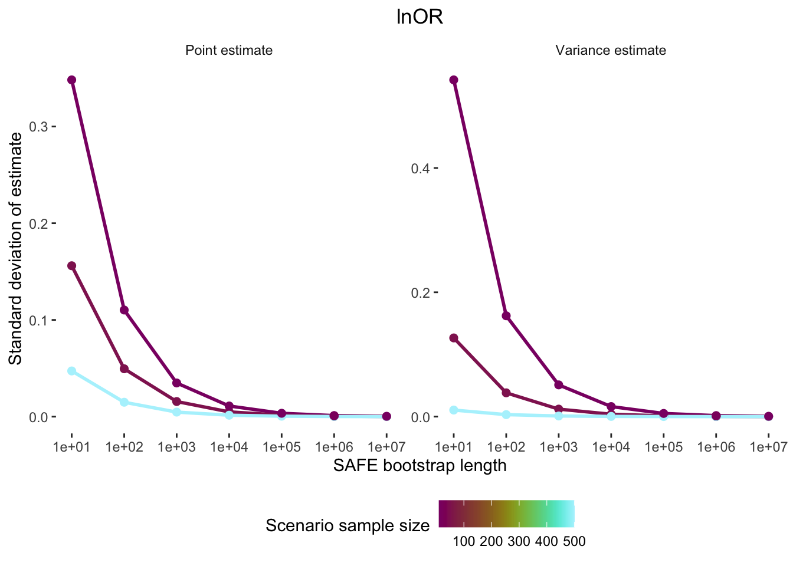
SMD 2-multivariate normal and 2-Wishart
lnCVR 4-multivariate normal
lnCVR 2-multivariate normal and 2-Wishart
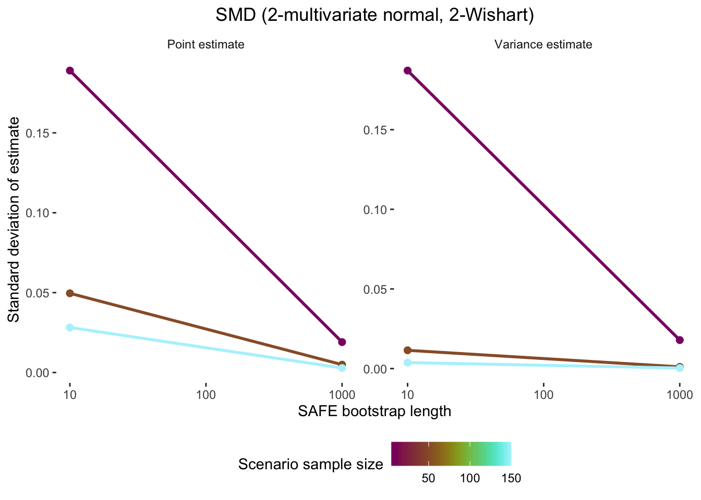
lnOR
lnRR
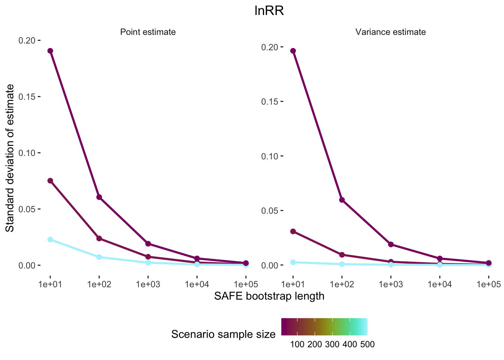